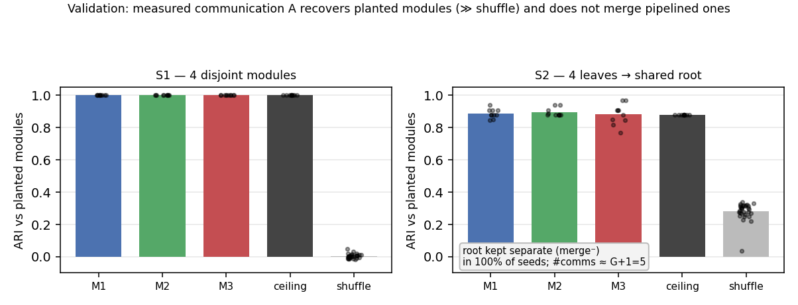
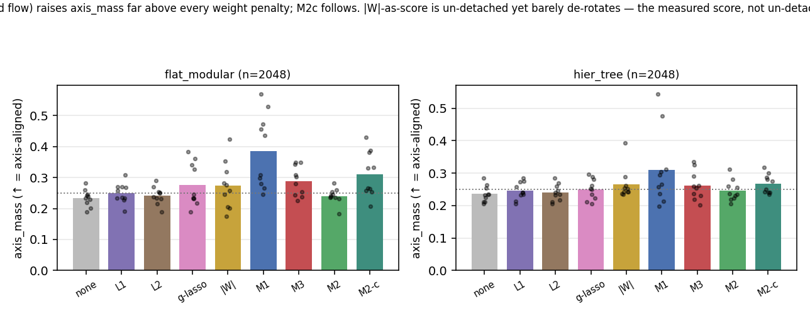
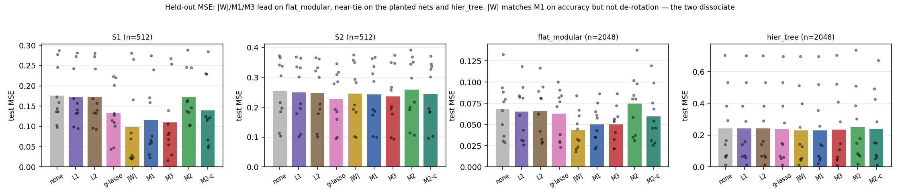
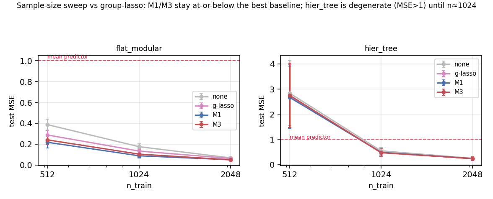

TL;DR. We price a per-neuron code prior by a measured communication score \(A\) instead of weight magnitude. \(A\) carries the module structure the prior needs — on planted networks it recovers disjoint modules and keeps two pipelined modules separate. Trained end-to-end, the prior de-rotates the hidden representation into neuron-aligned modules (axis-mass \(0.24\!\to\!0.44\)) where no weight penalty can, while matching a strong structured baseline on accuracy. Build it on the M1 (flow) score, and judge it by the alignment it buys rather than the accuracy it shaves.
1. The method
The problem. In the current NeuRep objective the per-neuron codes \(\phi_i\) receive no task gradient, and each connection is priced by its weight magnitude \(\rho(W_{ij})=\lvert W_{ij}\rvert\) — a static, data-free proxy for how much two neurons belong together. The companion forensics (learned codes don't make weights modular, the flat winning ticket under the microscope) show the task's real modules sit in rotated subspaces that mix many neurons, so a per-neuron code looks, a priori, like the wrong object.
The prior. Replace the data-free price with a measured communication score \(A\), and let the codes pay for connections in proportion to how far apart they sit: connected, communicating neurons are pulled together, weakly-communicating ones pushed apart. With code distance \(d_{ij}=\lVert\phi_i-\phi_j\rVert\) and margin \(m\),
\[\begin{equation}\label{eq:total} \mathcal{L}_{\text{total}} = \mathcal{L}_{\text{task}}(W)\;+\;\lambda\,\mathcal{R}_{\text{code}}, \end{equation}\] \[\begin{equation}\label{eq:code} \mathcal{R}_{\text{code}} = \sum_{\ell}\sum_{i,j}\Big[\,\widehat A^{(\ell)}_{ij}\,d_{ij}\;+\;c\,\max\!\big(0,\,m-d_{ij}\big)\Big], \qquad \widehat A^{(\ell)} = A^{(\ell)}\big/\,\overline{A^{(\ell)}}. \end{equation}\]Here \(\overline{A^{(\ell)}}\) is the mean of \(A^{(\ell)}\) over all sender–receiver pairs in the layer (a single scalar), so the layer-mean-normalized score \(\widehat A^{(\ell)}=A^{(\ell)}/\overline{A^{(\ell)}}\) has mean 1. \(A\) is not detached — it is read off the live network's weights and activations (Eqs. \eqref{eq:m1}–\eqref{eq:m3}; for M1 and M3 it carries an explicit \(\lvert W^{(\ell)}_{ij}\rvert\) factor), so the attraction term \(\widehat A^{(\ell)}_{ij}\,d_{ij}\) is a product of a weight-derived score and a code distance. It couples \(W\) and \(\phi\): the codes price the connections and the gradient flows back into the weights — without that coupling the codes would only describe the wiring, never reshape it. The constant \(c\) sets the attract/repel threshold (a pair attracts when \(\widehat A \gt c\), repels when \(\widehat A \lt c\)), and the layer-mean normalization keeps the typical entry \(O(1)\) so a single \(c\) holds across layers. The original proposal also carried an edge-suppression term \(\sum_{\ell,i,j}\big(1-A^{(\ell)}_{ij}\big)\lvert W^{(\ell)}_{ij}\rvert\) to prune weak connections; with \(A\) un-detached the attraction term already drives \(\lvert W\rvert\) down on far-code, weakly-communicating pairs, so we fold that role in and keep the two terms above.
Three candidate communication scores. \(A_{ij}\) measures sender \(j\,(\ell)\to\) receiver \(i\,(\ell{+}1)\) communication; three instantiations, in increasing strength:
\[\begin{align} \textbf{(M1) activation-weighted flow:}\quad & A^{(\ell)}_{ij}=\mathbb{E}_x\big|\,W^{(\ell)}_{ij}\,a^{(\ell)}_j\,\big|, \label{eq:m1}\\[2pt] \textbf{(M2) co-activation:}\quad & A^{(\ell)}_{ij}=\big|\mathrm{corr}_x\!\big(a^{(\ell)}_j,\,a^{(\ell+1)}_i\big)\big|, \label{eq:m2}\\[2pt] \textbf{(M3) output-Jacobian sensitivity:}\quad & A^{(\ell)}_{ij}=\mathbb{E}_x\Big|\,\tfrac{\partial \hat y}{\partial z^{(\ell+1)}_i}\,W^{(\ell)}_{ij}\,a^{(\ell)}_j\,\Big|. \label{eq:m3} \end{align}\]M3 uses the output Jacobian, not the loss gradient (which vanishes as the model fits). The bounded score M2 \(=\lvert\mathrm{corr}\rvert\in[0,1]\) is used in its complementary form \(\widehat A\,d_{ij}+(1-A)\max(0,m-d_{ij})\) — unnormalized, with a built-in threshold at correlation \(0.5\) — since the \((1-A)\) complement only makes sense on \([0,1]\). The rest of the report asks, in order: does \(A\) carry the structure the prior needs (§2), and what does training the prior do (§3)?
2. Validation — does \(A\) carry the module signal?
Before training anything, we check the premise: does a measured \(A\), read off a trained network, actually contain its module structure — and does it keep two pipelined modules apart? We use two planted masked MLPs in which every neuron's module and every inter-module edge is known by construction, each trained on its task so the activations and Jacobians are realistic. On each we compute \(A\), build the symmetrized neuron graph, detect communities (known-\(k\) spectral), and score recovery against the planted labels (ARI). Two controls bracket the read: a ceiling (\(A\) taken from the planted mask) and a shuffle negative control.
- \(A\) recovers disjoint modules (S1). With \(G=4\) disjoint sub-nets, every score recovers the modules essentially perfectly — ARI \(\approx 1.0\), matching the ceiling and \(\gg\) the shuffle control (\(\approx 0.01\)). The signal is unambiguously present (Fig. 1, left).
- \(A\) does not merge pipelined modules (S2). The decisive risk: when one module's output feeds the next through a strong reusability bottleneck, a naive "pull together everything that communicates" would transitively fuse the whole pipeline. It does not — across the leaf\(\to\)root bottleneck \(A\) recovers ARI \(\approx 0.88\!-\!0.90\) (\(\approx\) ceiling, well clear of the \(\approx 0.28\) shuffle floor, which sits above S1's because the layered graph alone carries some structure), the choose-\(k\) count lands at \(G{+}1=5\) communities, and the shared root keeps its own community in 10/10 seeds for every score — never absorbed into a leaf (Fig. 1, right).

3. Training the prior
With the signal validated, we train \(\mathcal{L}_{\text{total}}\) (Eqs. \eqref{eq:total}–\eqref{eq:code})
end-to-end and ask what it buys over the best simple regularizer. The realistic setting is a
\(24\!\to\!64\!\to\!64\!\to\!1\) GELU MLP on two tasks — flat_modular (one layer of factor groups) and
hier_tree (a depth-3 hierarchy). Baselines, all val-tuned on a matched six-point grid: NoReg, \(\ell_1\),
\(\ell_2\), and a structured group-lasso (groups = each neuron's fan-in; it prunes whole neurons — the apt
competitor for a method claiming neuron-level structure). Ten seeds; realistic tasks swept over
\(n\in\{512,1024,2048\}\); each score paired (per seed) against the best-of-\(\{\ell_1,\ell_2,\text{group-lasso}\}\) by
mean test MSE (Wilcoxon + Cohen's \(d_z\)); 560 runs, dispatched to PACE.
The headline: it de-rotates the network, and nothing else does. The prior's distinctive effect is
structural. We read it with axis-mass — the fraction of a module's hidden-activation subspace that lies on
single neuron axes (\(1=\)fully aligned) — where a module's subspace is recovered by resampling its input factor-group
and taking the top principal directions of the first-hidden-layer displacement. On flat_modular, where each
module is a disjoint input group computed in that first layer, M1 raises axis-mass to \(\approx0.39\!-\!0.47\),
against \(\approx0.28\!-\!0.32\) for the best weight penalty (group-lasso) and \(\approx0.23\) for NoReg — large and
significant at every sample size (\(d_z\) up to \(3.6\), \(p=.002\)). Neither \(\ell_1\), \(\ell_2\), nor
group-lasso shifts axis-mass off the NoReg value (Fig. 2). This is precisely the property the forensics said was
missing: the modules are rotated, but a prior whose codes act on the weights (the un-detached coupling)
rotates the network toward neuron alignment. The per-neuron code is no longer the wrong object — the prior
makes it the right one.
The de-rotation claim rests on flat_modular by design of the probe. On hier_tree M1 still
lifts axis-mass (\(+0.06\) at \(n=2048\), \(p=.02\)), but the read there is only partial: resampling raw input groups
and reading the first hidden layer sees the leaf modules, whereas the task's distinctive structure is the
hierarchical combination of those leaves — deeper than the first layer, and something a
\(24\!\to\!64\!\to\!64\!\to\!1\) net has no separate layer to expose cleanly. So hier_tree serves here as
a fit / sample-efficiency test, not a second de-rotation result.

hier_tree panel is a leaf-level read (see text).Accuracy: competitive, not a free lunch. Group-lasso is the strongest baseline in every cell
(\(\gg\ell_1\)). Against it, the prior still wins on the clean task flat_modular at \(n=512\) (M1
\(0.218\) vs \(0.288\), \(p=.014\)) and \(n=1024\) (M1 \(0.089\) vs \(0.134\), \(p=.002\), \(d_z=-1.27\)), but the
margin narrows to a tie as the task saturates (\(n=2048\)) and on the harder hier_tree once it
leaves its degenerate regime. So on raw accuracy the prior is on par with — occasionally better than — the best
structured penalty (Fig. 3); the result to bank is the de-rotation, not the MSE.

flat_modular and tie on the planted nets and the saturated/harder
regimes. M2 (green) is consistently worst.Sample size and which score. The sweep (Fig. 4) shows hier_tree is degenerate at
\(n=512\) (every method worse than the mean predictor) and becomes well-posed by \(n\approx1024\); the M1/M3 curves
sit at or below group-lasso throughout. Among scores the ordering is M1 \(\gt\) M3 \(\gg\) M2: M1 (flow)
is the clear pick, M3 (Jacobian) follows, and M2 (co-activation) actually loses to group-lasso and never
de-rotates — the weakest score, here a clear failure rather than a near-miss.

flat_modular,
\(\ell_1\) and \(\ell_2\) track NoReg and group-lasso sits between them and the prior; the M1/M3 advantage is largest
at small \(n\) and shrinks toward a tie as data grows. hier_tree only leaves the degenerate regime
(dashed = mean predictor) by \(n\approx1024\).4. Caveats
- The win is structural, not an accuracy claim. The prior's MSE edge over the best simple regularizer (group-lasso) is modest and evaporates as the task saturates or hardens; the robust, replicated result is de-rotation, whose value presumes axis-alignment is the goal (it is, for this program).
- Un-detaching \(A\) is load-bearing. A detached \(A\) makes the codes a read-out that never reshapes the weights, and the de-rotation vanishes; the \(\phi\!\to\!W\) gradient path is what does the work.
- Scope. Exploratory: small synthetic nets, smooth tanh teachers, one code architecture, two
realistic tasks.
hier_treeis degenerate below \(n\approx1024\), and the geometry probe reads modules as input factor-groups at the first hidden layer — so onhier_treeit sees only the leaf modules, not the deeper hierarchical combiners. A direction confirmed, not a method shipped.